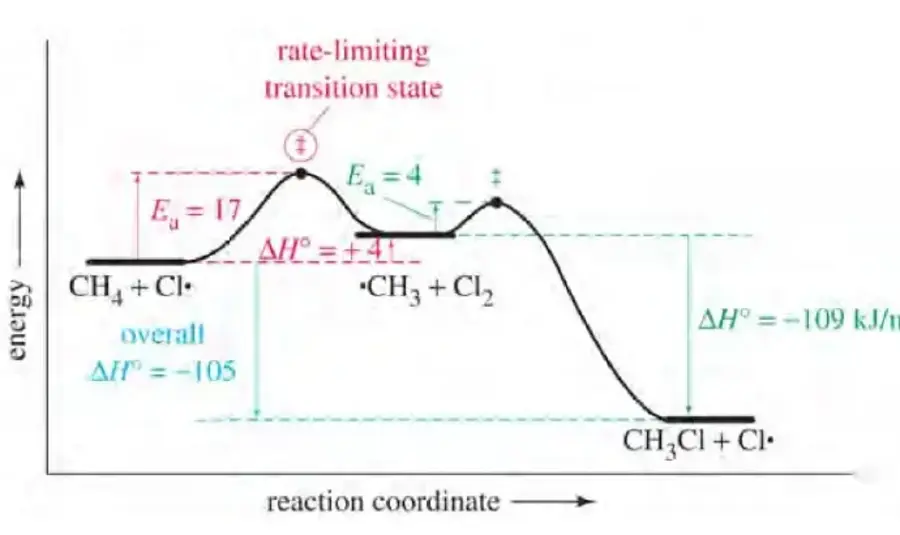
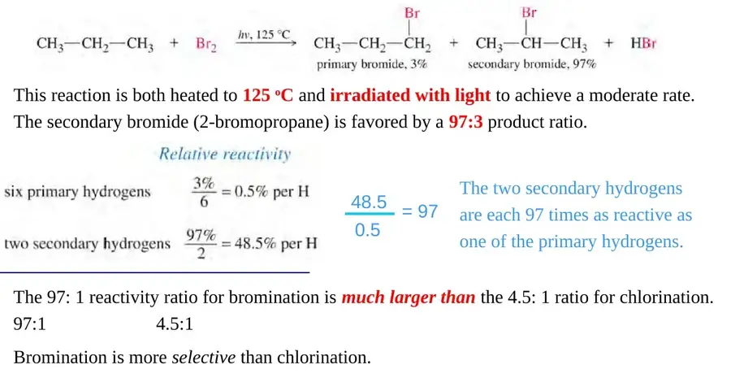
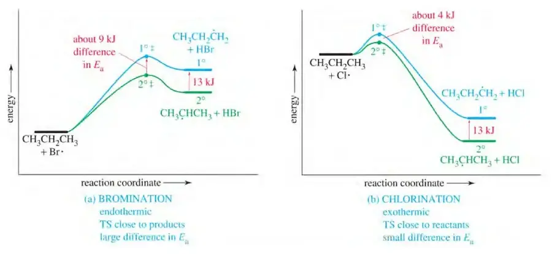
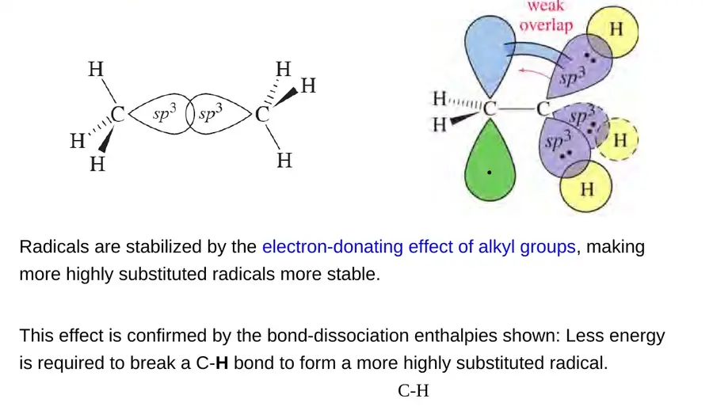
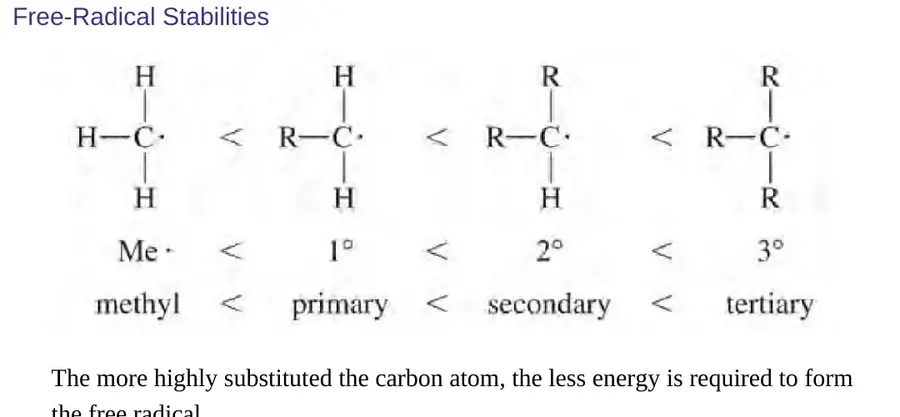
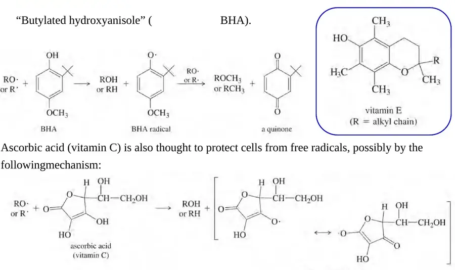
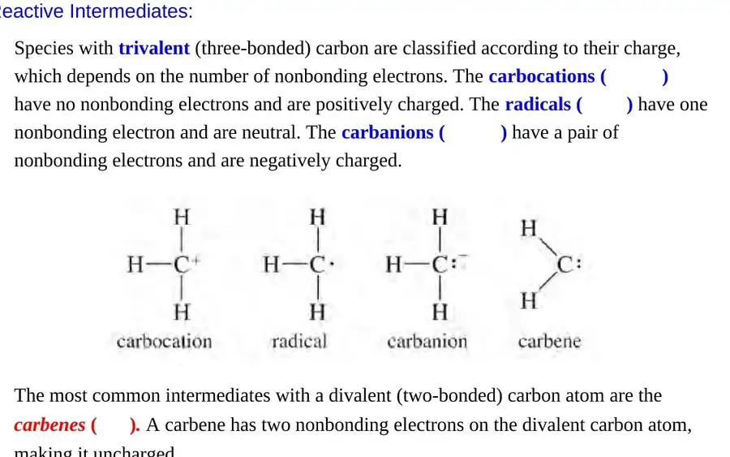
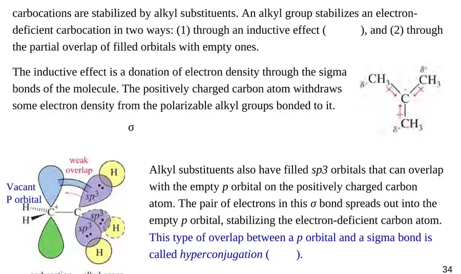
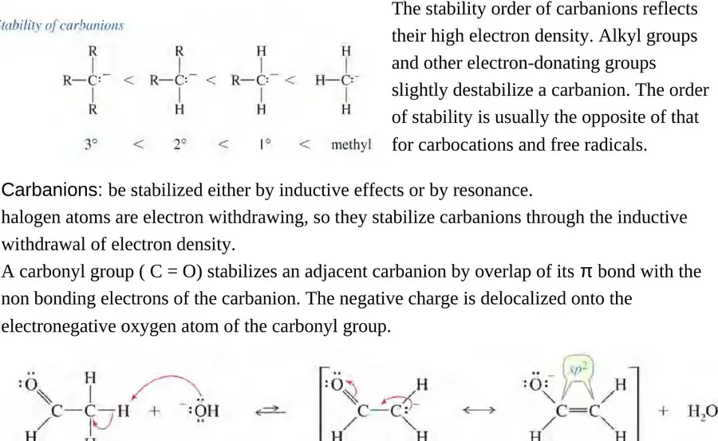
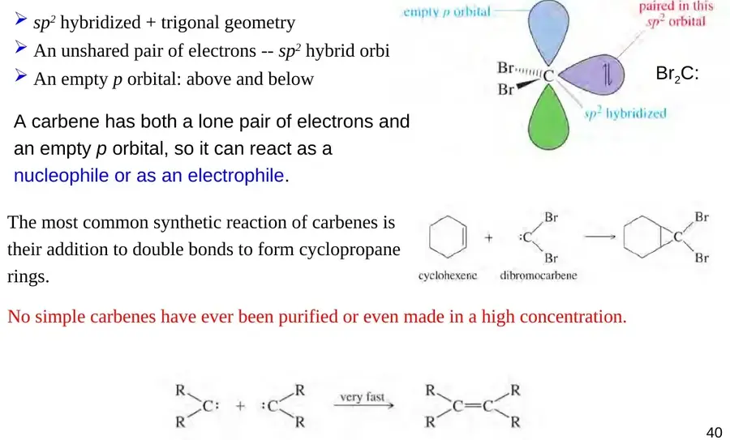

Br· 夺取烷烃氢是吸热过程。过渡态中 C–H 键已明显伸长、自由基特征较强，结构接近生成的伯/仲自由基。因此两种自由基稳定性相差多少，较大比例会反映到相应活化能差异上。
LECTURE 06 · CHAPTER 4-2
自由基卤代反应的选择性与活性中间体
Radical halogenation selectivity, the Hammond postulate, and reactive intermediates
课件拼写校订课件原图双语词条教材交叉核对
1. 多步反应中的限速步骤
在多步反应中，每一步都有自己的活化能与速率；实验观察到的总速率由机理中最难通过的动力学瓶颈控制。限速步骤（rate-limiting step，也称 rate-determining step）通常是跨越较大有效活化自由能的步骤。自由基卤代中，夺氢生成烷基自由基的第一步链增长常是限速步骤；随后的卤原子转移若足够快，就会迅速消耗刚形成的中间体。

读能量图时，要比较每个过渡态与它前一个中间体之间的能量差。不能只看相对最初反应物的绝对高度：若前置步骤先形成了较高能中间体，后续峰即使在图上更高，其局部能垒也未必更大。严格的速率控制还可能受到快速预平衡、反应物浓度及可逆性的影响，因此“最高点就是限速步骤”只是在简单连续反应图上的快捷判断。
2. 产物比例同时取决于位点数与单个位点反应性
反应选择性（selectivity）描述多条反应路径或多个反应位点之间，产物形成的偏好。对于自由基卤代，某类氢越容易被夺取，确实越有利于相应产物；但某类氢的数量也会改变最终产物比例。设位点类别 i 上有 ni 个等价氢，单个氢的夺取速率常数为 ki，那么该类产物的初始生成速率与以下乘积成正比：
vi = niki[R–H][X·]
vi 是位点类别 i 的产物生成速率；ni 是这类等价氢的个数；ki 是每个氢位点的速率常数；[R–H] 与 [X·] 分别是烷烃和卤素自由基浓度。比较同一反应中的两个位点时，共同的反应物浓度会抵消，因此低转化率下：
PsecPprim ≈ nsecksecnprimkprim
Psec 和 Pprim 分别表示仲位与伯位产物的生成量。丙烷有 2 个仲氢、6 个伯氢。氯代时约形成 60% 的 2-氯丙烷和 40% 的 1-氯丙烷，于是单个仲氢与单个伯氢的相对反应性为：
kseckprim = PsecnprimPprimnsec = 60 × 640 × 2 = 4.5

异丁烷则说明“较活泼的氢”不一定给出主要产物。它有 9 个伯氢、1 个叔氢；课件给出的单个叔氢相对单个伯氢反应性约为 5.5。因此叔位产物约占 1 × 5.59 × 1 + 1 × 5.5 = 38%，伯位产物仍约占 62%。判断主产物时，先数等价氢，再乘每个氢的相对反应性。
3. 溴代比氯代更有选择性
丙烷的自由基溴代在光照并加热至约 125 °C 时，主要生成 2-溴丙烷，产物比例约为 97:3。由于仲氢有 2 个、伯氢有 6 个，每个仲氢的相对反应性是：
97 × 63 × 2 = 97
也就是说，单个仲氢在该条件下被夺取的速率约为单个伯氢的 97 倍，远高于氯代时约 4.5 倍的差异。这里的 97:3 是反应生成的产物比例；97:1 才是校正氢原子数后的单个位点相对反应性，二者不能混为一谈。
过渡态理论把速率常数与活化自由能联系起来：
k = kBTh exp[−ΔG‡RT]
k 是速率常数，kB 是 Boltzmann 常数，h 是 Planck 常数，T 是绝对温度，R 是气体常数，ΔG‡ 是活化自由能。两条竞争路径处于相同温度时，前面的 kBT/h 因子约去，得到：
kseckprim ≈ exp[−ΔGsec‡ − ΔGprim‡RT]
在其他因素相近时，仲位路径活化自由能较低就会更快；两条路径的能垒差只要达到数个 RT，速率比就可能显著变化。对比单氢反应性时，这个关系把“过渡态能量差”直接连到了观测到的选择性。
选择性差异与夺氢步骤的热化学有关。用键解离焓估算单步反应焓：
ΔHrxn ≈ D(C–H) − D(H–X)
D 表示相应键的键解离焓。丙烷伯位 C–H 的解离焓约为 410 kJ·mol⁻¹，仲位约为 397 kJ·mol⁻¹；H–Cl 约为 431 kJ·mol⁻¹，H–Br 约为 368 kJ·mol⁻¹。因此，Cl· 夺氢通常放热（伯位约 −21、仲位约 −34 kJ·mol⁻¹），而 Br· 夺氢吸热（伯位约 +42、仲位约 +29 kJ·mol⁻¹）。这些数值是气相键解离焓的近似估算，用来解释趋势，不应视作所有溶剂和实验条件下的精确实测焓。
更吸热的溴代夺氢通常较慢，但更能区分不同自由基的稳定性；氟代则非常快、通常选择性很低，氯代居中，溴代较高。这个趋势也提醒我们：反应“快不快”和“挑不挑位点”是两个不同的问题。
4. Hammond 假说：过渡态为何影响选择性
Hammond 假说（Hammond postulate）指出：在结构相近的一组物种中，能量上彼此接近的物种，结构通常也更相似。因而过渡态的结构更接近能量上与它相邻的稳定物种。

Cl· 夺氢通常放热。过渡态中 C–H 键刚开始断裂，碳自由基特征较少，结构更像反应物；产物自由基的稳定性差异只部分反映到活化能中，所以选择性较低。
课件与教材图示中，伯/仲自由基的产物能量差约为 13 kJ·mol⁻¹；溴代两条路径的活化能差约 9 kJ·mol⁻¹，而氯代约 4 kJ·mol⁻¹。数值来自示意图，重点是“吸热的产物样过渡态更敏感于产物稳定性”。早期与晚期过渡态（early/late transition state）是结构比较的描述，不表示过渡态是真正的反应物或产物，也不是直接的时间刻度。
5. 自由基的结构与稳定性
自由基（radical）含有未成对电子。简单烷基自由基的碳通常近似 sp2 杂化、呈平面或近似平面结构；垂直于三个 σ 键平面的未杂化 p 轨道容纳一个单占电子。轨道示意有助于理解：这个电子既不是一对孤电子，也不意味着自由基必然带电。

仅比较普通烷基自由基时，稳定性通常为 3° > 2° > 1° > 甲基。烷基经诱导效应和相邻 σ 键的超共轭（hyperconjugation）分散未成对电子的高能特征，使更取代的自由基较稳定；相应 C–H 键也较容易均裂。若自由基与 π 键共轭，例如烯丙基或苄基自由基，共振离域往往能提供额外稳定化，不能只按“伯、仲、叔”排序。

6. 自由基抑制剂与抗氧化剂
自由基抑制剂（radical inhibitor）会快速捕获链反应中的自由基，并生成较稳定、难以继续传播链反应的物种。以酚类抗氧化剂为例，可用简化步骤表示氢原子转移：
ArOH + R· → ArO· + RH
ArOH 是带羟基的芳香族抑制剂，R· 是链自由基，ArO· 是较稳定的酚氧自由基。抑制剂把一个氢原子连同一个电子交给 R·，停止原来的链增长；ArO· 的未成对电子可在芳香体系中离域，反应性低得多。随后若与另一自由基偶联或转化成稳定产物，就进一步降低了链载体浓度。

课件举出叔丁基羟基茴香醚（BHA）、维生素 C 与维生素 E。它们都能参与抗氧化（antioxidant）过程，但溶解性、反应路径和生物环境不同；“抗氧化剂”不是指所有分子都用完全相同的自由基捕获机制。
7. 活性中间体的结构分类
反应中间体（reaction intermediate）位于机理中的局部能量最低点，能短暂存在；过渡态则是相邻能谷之间的能量最高构型，不能分离。三键碳中间体按电荷与非键电子数分类；二键碳常见类型是卡宾。

三键碳、零个非键电子，带正电；价层六电子，缺电子，通常表现为亲电体与 Lewis 酸。
三键碳、一个未成对电子，整体通常电中性；反应性取决于结构与反应伙伴，不能简单等同于阳离子。
三键碳、一对孤电子，带负电；价层八电子，通常表现为亲核体与 Lewis 碱。
二键碳，整体电中性并有两个非键电子；单线态和三线态的自旋排布不同，可呈两性反应性。
8. 碳正离子：空 p 轨道、诱导效应与超共轭
碳正离子（carbocation）的带正电碳通常与三个原子成键，近似 sp2 杂化、平面三角形，键角约 120°；垂直于平面的未杂化 p 轨道为空。以甲基碳正离子 CH3+ 为例，碳周围只有六个价电子，因此强烈缺电子，可接受亲核体的电子对。
普通烷基碳正离子的稳定性通常为 3° > 2° > 1° > 甲基。烷基有给电子的 +I 诱导效应（inductive effect），可经 σ 键向缺电子中心推送电子密度；邻近 C–H 或 C–C σ 键也可与空 p 轨道相互作用，通过超共轭稳定正电荷。若正电荷与 π 系统共轭，离域作用还能显著稳定碳正离子。

取代度排序只适用于可比的简单烷基碳正离子。苄基、烯丙基等共振稳定物种，以及邻近强吸电子基团的情况，需要把共振、诱导效应和溶剂化一起考虑。碳正离子常在极性介质中被溶剂或亲核试剂捕获，不宜理解成能在普通水溶液中长期自由存在的“离子颗粒”。
9. 碳负离子：孤对电子与反向稳定性趋势
碳负离子（carbanion）的三键碳带负电并拥有一对孤电子，价层满足八电子。简单烷基碳负离子通常近似 sp3 杂化、呈三角锥形，孤对电子占据一个轨道方向；若孤对电子与 π 键共轭，碳中心可趋向平面，使负电荷离域。
在简单烷基系列中，稳定性常呈相反顺序：甲基 > 1° > 2° > 3°。烷基的给电子效应会加剧碳负离子的电子富集，略微降低稳定性；卤素等吸电子基团可通过 −I 诱导效应稳定负电荷，羰基也可与邻位孤对电子共轭，把负电荷离域到氧上。碳负离子往往同时具有碱性和亲核性，但具体亲核性排序还受溶剂、离子配对和结构影响，不能对“所有碳负离子都强于所有胺”作无条件概括。

10. 卡宾：二价碳的两种自旋状态
卡宾（carbene）是带有二价碳的中性活性中间体。对于常见的单线态卡宾，碳原子的一对非键电子占据 sp2 轨道，垂直方向保留一个空 p 轨道；它既能给出电子对，也能接受电子，因此可表现出亲核与亲电两面性。三线态卡宾的两个非键电子分占不同轨道并具有平行自旋，呈双自由基特征。

卡宾的一种制备方式是强碱使三溴甲烷失去质子，形成三溴甲基负离子，随后脱去 Br⁻ 得到二溴卡宾 :CBr2。最简单的卡宾亚甲基 :CH2 可由重氮甲烷 CH2N2 受热或光照、放出 N2 后形成。卡宾对 C=C 双键加成能构建三元环。许多简单小分子卡宾寿命短、浓度低；这不能泛化为“任何卡宾都不可分离”，稳定卡宾家族是后续有机化学中的重要例外。
名称辨析
“亚甲基”可指分子中的 –CH2– 基团；“亚甲基卡宾” :CH2 则是一个活性中间体，二者不是同一概念。
11. 本轮课件校订
- 将 defferent、chorination、followingmechanism 分别校为 different、chlorination、following mechanism。
- 课件中 CH2N2 应称 diazomethane（重氮甲烷），不是 azidomethane（叠氮甲烷）；两者不是同一种含氮官能团。
- 碳正离子稳定化部分改写为“烷基经 σ 键供电子并参与超共轭”。原文对电子流方向的描述容易让人误读成烷基吸电子，复习时应记住普通烷基总体上稳定简单碳正离子。
- 叔氢反应性是单个位点速率，不等于叔位产物一定占多数；异丁烷中 9 个伯氢对 1 个叔氢的统计效应使伯位产物仍约为 62%。
- “简单卡宾难以高浓度存在”限定的是高活性的小分子卡宾；稳定卡宾不能据此一概排除。
- 能量图上的过渡态是机理中的瞬时高能构型；真正的反应中间体则位于局部能量最低点，两者不可混称。